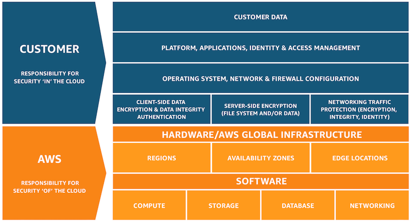

Unofficial - F5 Certification Exam Prep Material > F5 202 - Pre-Sales Fundamentals Study Guide 11/01/19 Source | Edit on
Section 2 - Education¶
Objective - 2.01 Educate and present on technical capabilities of F5 solutions¶
As a sales architect/engineer, you will need to educate your customers on the technical capabilities of the products you sell. This means you will need to know the solutions as well as their use cases. You can never be too well read when it comes to understanding how F5 solutions can solve customer issues.
2.01 - Present F5 overview, product feature sets, new version features, reference architectures to a technical audience
https://partners.f5.com/products/platforms/big-ip
F5 BIG-IP
BIG-IP is a powerful application delivery platform that offers your customers the most comprehensive set of application services in the industry. When your customers put BIG-IP to work for their applications, they are assured robust security, fast performance, and maximum availability in the data center and the cloud.
All BIG-IP modules share a common, underlying full-proxy architecture, F5’s Traffic Management Operating System (TMOS), which provides intelligence, flexibility, and programmability. With the BIG-IP platform, you can solve your customers’ immediate application delivery challenges and leverage additional modules to grow your opportunity as customers’ security, performance, global availability, and scaling needs change.
https://www.f5.com/pdf/products/big-ip-local-traffic-manager-ds.pdf
BIG-IP Local Traffic Manager
BIG-IP Local Traffic Manager (LTM) helps you deliver your applications to your users in a reliable, secure, and optimized way. You get the extensibility and flexibility of application services with the programmability you need to manage your physical, virtual, and cloud infrastructure. With BIG‐IP LTM, you have the power to simplify, automate, and customize applications faster and more predictably.
Full proxy means full power
Because BIG-IP LTM is a full proxy, you can inspect, manage, and report on application traffic entering and exiting your network. From basic load balancing to complex traffic management decisions based on client, server, or application status, BIG-IP LTM gives you granular control over app traffic.
Blazing fast SSL
The SSL performance of BIG-IP LTM lets you cost-effectively protect the end-to-end user experience by encrypting everything from the client to the server. It also scales on-demand and absorbs potentially crippling DDoS attacks. BIG-IP LTM includes levels of inspection necessary to block bad traffic and allow good traffic to pass through.
TCP Optimization
The highly optimized TCP/IP stack, TCP Express, combines TCP/IP techniques and improvements in the latest RFCs with extensions to minimize the effect of congestion and packet loss and recovery. Independent testing tools and customer experiences show TCP Express delivers up to a 2x performance gain for users and a 4x increase in bandwidth efficiency.
Performance optimization
BIG-IP LTM can optimize the speed and reliability of your applications via both network and application layers. Using real-time protocol and traffic management decisions based on application and server conditions, extensive connection management, and TCP and content offloading, BIG-IP LTM dramatically improves page load times.
Programmability
BIG-IP LTM is programmable, so you can take the visibility and control it provides and immediately act on it using iRules, F5’s event-driven scripting language. From defeating zero-day attacks to cloning specific app requests or dealing with custom application protocols, iRules let you adapt to application delivery challenges across any environment.
Scale and Speed
With BIG-IP LTM, you get a sophisticated, enterprise-class load balancer. You also get granular layer 7 control, SSL offloading and acceleration capabilities, and ScaleN technology that delivers on-demand scaling.
https://www.f5.com/products/big-ip-services/big-ip-dns
BIG-IP DNS
BIG-IP DNS improves the performance and availability of your global applications by sending users to the closest or best-performing physical, virtual, or cloud environment. It also hyperscales and secures your DNS infrastructure from DDoS attacks.
Speed and security
BIG-IP DNS can hyperscale up to 100 million responses per second (RPS) to manage rapid increases in DNS queries. With a set of features that includes multicore scalability, DNS Express, and IP Anycast integration, BIG-IP DNS handles millions of DNS queries, protects your business from DDoS attacks, and ensures top application performance for users.
Always-on Availability
BIG-IP DNS routes distributed app traffic to keep pace with changing network and user volumes that can overwhelm data centers during peak traffic times. BIG-IP DNS can also be configured as a full proxy for global load balancing applications and DNS across architectures, as well as across the globe.
Integrates with your infrastructure
BIG-IP DNS services integrate with DNS zone management solutions, increase DNS performance at the network edge, and mask the DNS back-end infrastructure. That translates into higher productivity, server consolidation, faster responses, and protected DNS management.
https://www.f5.com/pdf/products/big-ip-advanced-firewall-manager-datasheet.pdf
BIG-IP Advanced Firewall Manager
BIG-IP Advanced Firewall Manager (AFM) is a high-performance, stateful, full-proxy network security solution designed to guard data centers against incoming threats that enter the network on the most widely deployed protocols. BIG-IP AFM gives enterprises and service providers the scalability, flexibility, performance, and control needed to mitigate the most aggressive, volumetric distributed denial-of-service (DDoS) attacks before they reach the data center.
Scale to meet network demand
Meet demands for higher bandwidth usage and concurrency rates with F5’s proven TMOS architecture, hardware systems, and virtual editions to ensure performance while under attack.
Ensure application availability
Secure networks from DDoS threats across a variety of protocols, with in-depth rules customization and increased performance and scalability.
Protect with app-centric, full-proxy firewall capabilities
Inspect all incoming client connections and server-to-client responses, and mitigate threats based on security and application parameters before forwarding them on to the server.
Inspect SSL sessions
Fully terminate and decrypt SSL traffic to identify potentially hidden attacks—at high rates and with high throughput.
Streamline firewall deployment
Simplify security configuration with firewall policies oriented around applications and an efficient rules and policy GUI.
Customize reporting for visibility
Easily understand your security status with rich customizable reports, logging, and charts that provide insight to all event types and enable effective forensic analysis.
https://www.f5.com/pdf/products/big-ip-application-security-manager-ds.pdf
BIG-IP Application Security Manager/Advanced Application Security Manager
BIG-IP Application Security Manager (ASM) is a flexible web application firewall that secures web applications in traditional, virtual, and private cloud environments. BIG-IP ASM provides unmatched application and website protection, complete information about attacks from within the user interface, and compliance for key regulatory mandates. BIG-IP ASM is a key part of the F5 application delivery firewall solution, which consolidates traffic management, network firewall, application access, DDoS protection, SSL inspection, and DNS security
Protect web and mobile applications from malicious bots
F5 secures an organization’s most valued assets, applications, and sensitive data from bots, automated attacks, web scrapers, and exploits. Advanced WAF extends bot protection to mobile applications through the F5 Anti-Bot Mobile SDK, providing rapid deployment of mobile bot protection through an easy-to-use web portal without requiring any changes to the application or mobile device. Applications fused with mobile bot protection are supported in vendor and third-party application stores.
Safeguard credentials and sensitive data from theft and abuse
Advanced WAF secures credentials and sensitive data from theft and abuse, preventing data breaches and mitigating automated attacks that leverage previously stolen credentials. F5 BIG-IP DataSafe application layer encryption in Advanced WAF masks sensitive fields directly within the user’s web browser, rendering data stolen by bad actors through client-side attacks useless. Using BIG-IP DataSafe, customers can encrypt data at the field level transparently, without requiring any changes on clients or Web servers. Comprehensive brute force mitigation including credential stuffing protection defends against automated attacks that leverage previously stolen credentials.
Defend against sophisticated application denial-of-service (DoS)
Advanced WAF discovers and fingerprints new and unusual traffic patterns without human intervention, distinguishing and isolating potential malicious traffic from legitimate traffic. This automated mitigation capability is based on a continuous feedback loop of client behavior and server stress. If anomalous behavior is detected, Advanced WAF automatically builds a dynamic signature and begins mitigating the attack. The effectiveness of the mitigation is then monitored through the continuous feedback loop. False positives are reduced while accuracy and performance are improved through continuous mitigation tuning as the attack starts, evolves, or stops.
Mitigate sophisticated threat campaigns
Threat Campaigns provide targeted signatures to protect organizations from pervasive attacks that are often coordinated by organized crime and nation states. Based on F5 Labs research, Threat Campaigns provide critical intelligence to fingerprint and mitigate sophisticated attacks with nearly real-time updates. Metadata is used to determine both malicious requests and malicious intent, and the high accuracy of Threat Campaign signatures immediately blocks active threats with low false positives and no learning cycle.
Protect APIs
As web applications expand from connected to collaborative via the extensive use of Application Programming Interfaces (APIs), Advanced WAF ensures that API methods are enforced on URLs. It also secures applications against API attacks that commonly go undetected by traditional firewalls. With a unique defense mechanism that guards XML, JSON, and GTW APIs through rate limiting, behavioral analysis, and anti-automation, Advanced WAF automatically detects application program interface threats, enforces strict policy rules for each use case, and blocks attacks and special content types—closing the back door on application threats. With F5 Access Manager, API protection is improved through comprehensive authentication and token enforcement.
Ensure application security and compliance
Gain comprehensive security against sophisticated layer 7 attacks, blocking threats that evade traditional WAFs and enabling compliance with key regulatory mandates.
Turn on protection immediately
Simplify security with pre-built policies, thousands of out-of-the-box signatures, and a streamlined approach to policy management that decreases operational expenses.
Patch vulnerabilities fast
Identify and resolve app vulnerabilities in minutes with leading dynamic application security testing (DAST) integration and automatic virtual patching.
Deploy flexibly
Deploy as an appliance, in virtual or cloud environments, and as a managed service supporting multi-tenant services while incorporating external intelligence that secures against known IP threats.
Defend with proven advanced protections
Defend with highly programmable technology that dynamically adapts policies, proactively stops bots and DoS attacks, and demonstrates 99.89% overall security effectiveness.
Magnify threat knowledge
Easily understand your security status with detailed forensic analysis, full visibility into HTTP and WebSocket traffic, and rich insight into all events and user types.
https://www.f5.com/pdf/products/big-ip-access-policy-manager-ds.pdf
BIG-IP Access Policy Manager
BIG-IP Access Policy Manager (APM) is a secure, flexible, high-performance solution that provides unified global access to your network, cloud, and applications. With a single management interface, it converges and consolidates remote, mobile, network, virtual desktops, and web access. BIG-IP APM enables the creation and enforcement of simple, easy-to-manage, intelligent access policies.
Centralize identity and access control
Simplify access management with identity, context, and application-aware policies.
Unify access controls
Consolidate remote, mobile, network, virtual desktop infrastructure (VDI), and web access in one interface with adaptive identity federation, single sign-on (SSO), and multi-factor authentication (MFA).
Reduce costs
Replace proxy tiers with an integrated solution for VMware Horizon/Workspace ONE, Citrix XenApp, Microsoft Exchange, and others.
Defend the weak links
Protect against data loss, malware, and rogue device access with comprehensive endpoint posture and security checks.
Secure web access
Control access to suspicious web content and apply intelligent Forcepoint technology to defend against highly complex web threats.
Do it all at scale
No performance trade-offs for security, even in the most demanding environments.
https://www.f5.com/products/security/access-manager/secure-web-gateway
F5 Secure Web Gateway
F5 Secure Web Gateway (SWG) is an add-on license to BIG-IP APM. F5 SWG services can enforce secure web access for on-premises, remote, and mobile users. It also helps protect against web-borne malware, targeted attacks, and other insidious dangers lurking on the web.
URL filtering
URL filtering helps to ensure appropriate usage policies. Using the extensive Forcepoint database, URL filtering in Secure Web Gateway Services controls access to websites, web-based applications, protocols, and videos. Secure Web Gateway Services also filters search results based on your policy, preventing the display of offensive search results or images. URL filtering is customizable, and it helps reduce and mitigate corporate exposure to web-based threats and data leakage. BIG-IP APM provides flexibility for enterprises to allow, block, or “confirm and continue” access for certain users to the Internet, specific websites, and web applications.
URL categorization database
Secure Web Gateway Services leverages the powerful Forcepoint URL categorization engine and database that is constantly classifying tens of millions of URLs across the Internet. URL categorization is contextually-aware and applies real-time classification information against known web pages—assessing new web pages and URLs using advanced machine learning. This minimizes false positives and improves URL classification.
Web security
Secure Web Gateway Services also detects and blocks malware or malicious scripts within web pages by scanning return HTTP/HTTPS traffic. The malware engine contains web malware analytics, signatures, and heuristic detection engines that identify and eradicate general and specialized threats. When a remote user accesses the web through a per-app VPN tunnel in BIG-IP APM, Secure Web Gateway Services protects the session as though the user was on the corporate network. Authentication, URL filtering, and malware scanning polices are applied. Secure Web Gateway Services can also bypass or block SSL websites (based on inspection) for privacy and compliance purposes—enabling flexible control for access to SSL-encrypted websites.
Real-time threat intelligence
Leveraging the Forcepoint cloud-based threat intelligence infrastructure to deliver constant, up-to-date security information, Secure Web Gateway Services detects threats within web and social networking content. It synchronizes with Forcepoint cloud-based threat intelligence on a user-configurable schedule.
User identification
Secure Web Gateway Services keeps track of the mapping between user identity and network addresses while enabling transparent, user-based security policies through the F5 User Identity Agent. The User Identity Agent runs on a Windows-based server and pulls information from Active Directory domain controllers, enabling Secure Web Gateway Services to fully track a user’s web activity by user identity or group membership.
Graphical security reporting and comprehensive logging
The graphical user interface within Secure Web Gateway Services lets system administrators view and export various security analytics reports. These reports empower administrators with total visibility of outbound and inbound web traffic, Internet use, and policy enforcement. Logs may be published through the F5 log publisher to well- known security information and event management (SIEM) solutions, including ArcSight and Splunk for longer-term storage and analytics.
https://www.f5.com/pdf/products/ip-intelligence-service-ds.pdf
F5 IP Intelligence
F5 IP Intelligence incorporates external, intelligent services to enhance automated application delivery with better IP intelligence and stronger, context-based security. By identifying IP addresses and security categories associated with malicious activity, the IP Intelligence service can incorporate dynamic lists of threatening IP addresses into the F5 BIG-IP® platform, adding context to policy decisions. IP Intelligence service reduces risk and increases data center efficiency by eliminating the effort to process bad traffic.
Ensure IP threat protection
Deliver contextual awareness and analysis to block threats from a dynamic set of high-risk IP addresses.
Improve visibility into threats from multiple sources
Detect malicious activity and IP addresses with help from a global threat-sensor network and IP intelligence database.
Enable granular threat reporting and automated blocking
Reveal communication with malicious IP addresses to create more effective security policies.
Optimize protection with real-time updates
Automatically refresh the threat database as often as every five minutes to keep the organization safe.
https://www.f5.com/pdf/products/websafe-datasheet.pdf
F5 WebSafe
F5 WebSafe delivers web fraud protection that safeguards banks, e-retailers, and other organizations exposed to online fraud. It protects online customers from a broad range of web fraud across all devices—without impacting the user experience. WebSafe helps organizations to achieve success in the fight against credential theft, web-based malware, and online fraud targeting web application users. Using unique and advanced capabilities that complement existing fraud prevention techniques and solutions, WebSafe gives your organization the ability to provide greater online fraud protection and make more informed overall security decisions that prevent account take overs, identity theft, and system breaches.
Guard against targeted and generic malware
Recognize and safeguard against sophisticated threats, including web injection, credential grabbing, man-in-the-browser (MITB), Remote Access Trojans (RATs), form loggers, password stealers, and more.
Preempt phishing attacks
Identify phishing attacks before they are launched—at the point where attackers are creating and testing spoofed domains.
Protect without client downloads
Inspect all users, whether they are browsing from a desktop, mobile device, set-top box, or even a game console.
Easily deploy fraud detection and prevention
Secure your site without application modifications or changes to the user experience.
Maintain up-to-date global threat intelligence
Monitor the latest and most sophisticated attacks that may potentially impact your business.
https://www.f5.com/services/resources
Reference Architectures
The F5 Resources page has a ton of useful material from customer stories to recommended practice guides. You will also find reference architectures in the white papers section. Below are links to just a couple of the reference architectures you should review.
https://f5.com/solutions/enterprise/reference-architectures/intelligent-dns-scale
Intelligent DNS Scale Reference Architecture
F5’s end-to-end Intelligent DNS scale reference architecture enables organizations to build a strong DNS foundation that maximizes resources and increases service management, while remaining agile enough to support both existing and future network architectures, devices, and applications.
https://www.f5.com/services/resources/white-papers/the-f5-ssl-reference-architecture
SSL Reference Architecture
SSL is becoming the primary protocol between an organization and its customers. It protects traffic between those customers and the organization’s services, whether those services are in the cloud or on premise.
2.01 - Present F5 overview, key F5 messaging, training options, value of F5 to a non-technical audience
https://www.f5.com/products/big-ip-services/local-traffic-manager
F5 Overview - BIG-IP Local Traffic Manager
BIG-IP Local Traffic Manager enables you to control network traffic, selecting the right destination based on server performance, security, and availability.
https://www.f5.com/products/big-ip-services/big-ip-dns
F5 Overview - BIG-IP DNS
BIG-IP DNS improves the performance and availability of your global applications by sending users to the closest or best-performing physical, virtual, or cloud environment. BIG-IP DNS services integrate with DNS zone management solutions, increase DNS performance at the network edge, and mask the DNS back-end infrastructure. That translates into higher productivity, server consolidation, faster responses, and protected DNS management.
https://www.f5.com/products/security/access-manager
F5 Overview - BIG-IP Access Policy Manager (Access Manager)
Access Manager secures, simplifies, and protects user access to apps and data, while delivering the most scalable access gateway on the market.
https://www.f5.com/pdf/products/F5_advanced_WAF_overview.pdf
Value of F5 - BIG-IP Application Security Manager /Advanced WAF
Applications are critical to your business. Without the right protection, however, they can become an attack vector that may ultimately lead to a data breach. Consider this alarming statistic: Organizations have an average of 765 web applications and these applications are the initial target of data breaches 53% of the time. Web application firewalls (WAF) protect your applications from data breaches by fixing vulnerabilities and stopping attacks.
https://www.f5.com/products/security/advanced-firewall-manager
F5 Overview - BIG-IP Advanced Firewall Manager
Protect your network against incoming threats, including the most massive and complex DDoS attacks. DDoS attacks saturate bandwidth, consume network resources, and disrupt application services. Can your infrastructure successfully fend them off? Advanced Firewall Manager mitigates network threats before they disrupt critical data center resources.
https://www.f5.com/products/security/ssl-orchestrator
F5 Overview - SSL Orchestrator
Maximize infrastructure investments, efficiencies, and security with dynamic, policy-based decryption, encryption, and traffic steering through multiple inspection devices. Over 80% of page loads are encrypted with SSL/TLS. Attackers commonly use encryption to hide malicious payloads. If you’re not inspecting SSL/TLS traffic, you will miss attacks, and leave your organization vulnerable. SSL Orchestrator provides robust decryption/encryption of SSL/TLS traffic.
https://www.f5.com/products/security/ddos-hybrid-defender
F5 Overview - DDoS Hybrid Defender
Get comprehensive DDoS protection for your network and at the application layer with flexibility and scale for inline, out-of-band, and hybrid deployments. DDoS Hybrid Defender is the only multi-layered defense that protects against blended network attacks and sophisticated application attacks, while enabling full SSL decryption, anti-bot capabilities, and advanced detection methods—all in one appliance.
https://www.f5.com/products/automation-and-orchestration/big-iq
F5 Overview - BIG-IQ Centralized Manager
BIG-IQ Centralized Management provides a central point of control for F5 physical and virtual devices. It simplifies management, helps ensure compliance, and gives you the tools you need to deliver your applications securely and effectively.
https://www.f5.com/products/big-ip-services/local-traffic-manager
Value of F5 - SSL Performance
The SSL performance of BIG-IP LTM lets you cost-effectively protect the end-to-end user experience by encrypting everything from the client to the server. It also scales on-demand and absorbs potentially crippling DDoS attacks. BIG-IP LTM includes levels of inspection necessary to block bad traffic and allow good traffic to pass through.
Objective - 2.02 Gather resources to replicate F5 technical demonstrations¶
2.02 - Identify valuable technical resources (F5.com, DevCentral, Askf5.com, GitHub, VLAB)
This section is focused on the candidate understanding where to go for information and resources.
F5.com
Get the detailed information you need on F5 products. Datasheets include features, specifications, system requirements, and more.
DevCentral
Learn F5 Technologies, Get Answers & Share Community Solutions. DevCentral is a source for tools, techniques, and collaboration to help you build solutions with iControl, iCall, iApps and iRules that enable applications to work in concert.
Askf5.com
AskF5 is your storehouse for thousands of solutions to help you manage your F5 products more effectively. Whether you want to search the knowledge base periodically to research a solution, or you need the most recent news on your F5 products.
*https://support.f5.com/csp/article/K80012344*
Github
To support the development community, F5 may post open source software to an F5-specific GitHub community located at *https://github.com/F5Networks*. These repositories support Automation and Orchestration efforts for BIG-IP in Private and Public clouds.
https://partners.f5.com/learning/technicaldemos
Solution Demos
Showing is better than telling, right? Check out these recordings that walk you through how to create a live, compelling demo for your customers.
Virtual Lab Environment (vLab)
Partners may download vLab environment to demonstrate BIG-IP features on their laptop or work/personal lab environment.
Objective - 2.03 Given a scenario, articulate key values of F5 solutions¶
2.03 - Prepare solution pitches for F5 solutions and technology
https://partners.f5.com/solutions/f5-sales-plays
F5 Sales Plays
A sales play is designed to help our Channel Partner’s position F5 solutions for a specific customer need. Each sales play includes a set of materials designed for training that will prepare and help you position F5 solutions that will drive an end-to-end sale. The content of the sales play includes the sales playbook, customer facing deck and other associated documentation such as whiteboards, demos and/or collateral to help support the sales pitch.
https://partners.f5.com/learning/accreditation
F5 Sales Accreditation
The F5 Sales Accreditation for technical and sales roles is the first step in becoming fluent in F5 solutions and technologies and understanding how to bring them to your customers. The accreditation is offered online through Learn F5. Through the accreditation, you will learn how to address customers’ current business initiatives and future business challenges with F5’s emphasis on making sure that customers’ applications are always fast, available, and secure, anywhere.
Knowledge gained on Learn F5 will help with the exam.
2.03 - Match products, features, solutions, to customer initiatives or requirements
https://partners.f5.com/solutions
This section is very similar with section 1.03 just from a different point of view. You need to be able to educate the customer on what problems our products solve. The IT acronym machine has been running strong for decades and talking in acronyms especially proprietary product acronyms is not a good way to improve the customers understanding of what F5 does. So, being able to correlate F5’s three letter product offerings to the industry standard name of the solution that can meet the customer’s needs is key. If a customer needs to block cross-site scripting (XSS) on their primary internet facing application, you should be able to say which product from F5 can solve their issue. There are many solutions with our products and you should be familiar with them all.
Objective - 2.04 Given a scenario, distinguish architectural considerations that may affect the F5 solution¶
2.04 - Determine cloud strategy
https://www.f5.com/solutions/cloud
Consistent Application Services
Get consistent app services in any cloud. F5 ensures apps are secure and available, in any infrastructure. You can apply the same enterprise-grade load balancing, DNS services, web application firewalls, access control, application-level security, and policy management found in on-premises environments.
2.04 - Determine security constraints
https://www.f5.com/solutions/cloud/public-cloud
Public Cloud Shared Security
Public CSPs guarantee the security of the infrastructure, but application owners are responsible for the security of their applications and data. This means that Cloud infrastructure may be secure, but customer’s data and applications are not protected by the CSP. There is still a need for application services in the Cloud.
This is a diagram of the AWS shared security model.
2.04 - Determine management and orchestration
https://www.f5.com/pdf/products/big-iq-datasheet.pdf
F5 BIG-IQ Centralized Management provides a central point of control for F5 physical and virtual devices and for the solutions that run on them. It simplifies management, helps ensure compliance, and gives you the tools you need to deliver your applications securely and effectively.
BIG-IQ manages policies, licenses, SSL certificates, images, and configurations for F5 devices and for the following F5 modules:
- BIG-IP Local Traffic Manager (LTM)
- BIG-IP Application Security Manager (ASM)
- BIG-IP Advanced Firewall Manager (AFM)
- BIG-IP Access Policy Manager (APM)
- F5 Secure Web Gateway Services
- BIG-IP DNS
- F5 WebSafe and F5 MobileSafe (monitoring and updates)
BIG-IQ is ideal for organizations that require central management of F5 devices and modules, license management of BIG-IP VEs, or central reporting and alerting on application availability, performance,
and security.
https://www.f5.com/solutions/automation-and-orchestration/management-visibility-and-orchestration
Super-NetOps
NetOps, Super-NetOps, DevOps
Whether you want to automate your existing deployments or integrate into CI/CD pipelines, F5 automation and orchestration solutions can help you increase efficiency and decrease risk across your application portfolio.
Cloud, automated deployment, and DevOps practices are reshaping IT, as developers increasingly bypass internal IT teams to meet business demands for speed.
Super-NetOps self-pace curriculum designed to help previously siloed NetOps and DevOps teams to begin to collaborate and teaches BIG-IP administrators how to standardize services and provide them through automation toolchains, reducing time-to-service from days to minutes.